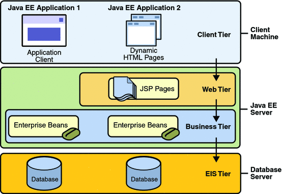
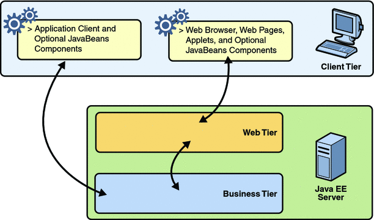
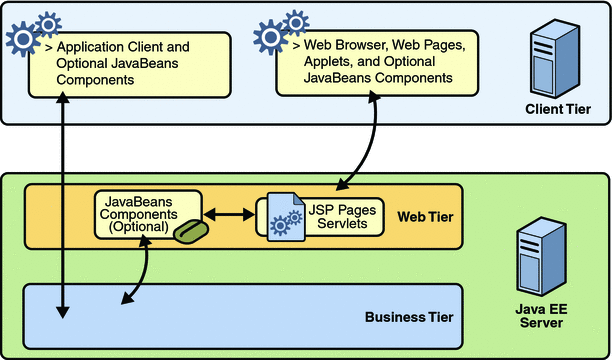
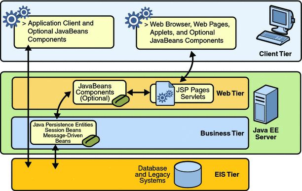

Distributed Multitiered Applications
The Java EE platform uses a distributed multitiered application model for enterprise applications. Application logic is divided into components according to function, and the various application components that make up a Java EE application are installed on different machines depending on the tier in the multitiered Java EE environment to which the application component belongs.
Figure 1-1 shows two multitiered Java EE applications divided into the tiers described in the following list. The Java EE application parts shown in Figure 1-1 are presented in Java EE Components.
Client-tier components run on the client machine.
Web-tier components run on the Java EE server.
Business-tier components run on the Java EE server.
Enterprise information system (EIS)-tier software runs on the EIS server.
Although a Java EE application can consist of the three or four tiers shown in Figure 1-1, Java EE multitiered applications are generally considered to be three-tiered applications because they are distributed over three locations: client machines, the Java EE server machine, and the database or legacy machines at the back end. Three-tiered applications that run in this way extend the standard two-tiered client and server model by placing a multithreaded application server between the client application and back-end storage.
Figure 1-1 Multitiered Applications
Security
While other enterprise application models require platform-specific security measures in each application, the Java EE security environment enables security constraints to be defined at deployment time. The Java EE platform makes applications portable to a wide variety of security implementations by shielding application developers from the complexity of implementing security features.
The Java EE platform provides standard declarative access control rules that are defined by the developer and interpreted when the application is deployed on the server. Java EE also provides standard login mechanisms so application developers do not have to implement these mechanisms in their applications. The same application works in a variety of different security environments without changing the source code.
Java EE Components
Java EE applications are made up of components. A Java EE component is a self-contained functional software unit that is assembled into a Java EE application with its related classes and files and that communicates with other components.
The Java EE specification defines the following Java EE components:
Application clients and applets are components that run on the client.
Java Servlet, JavaServer Faces, and JavaServer PagesTM (JSPTM) technology components are web components that run on the server.
Enterprise JavaBeansTM (EJBTM) components (enterprise beans) are business components that run on the server.
Java EE components are written in the Java programming language and are compiled in the same way as any program in the language. The difference between Java EE components and “standard” Java classes is that Java EE components are assembled into a Java EE application, are verified to be well formed and in compliance with the Java EE specification, and are deployed to production, where they are run and managed by the Java EE server.
Java EE Clients
A Java EE client can be a web client or an application client.
Web Clients
A web client consists of two parts: (1) dynamic web pages containing various types of markup language (HTML, XML, and so on), which are generated by web components running in the web tier, and (2) a web browser, which renders the pages received from the server.
A web client is sometimes called a thin client. Thin clients usually do not query databases, execute complex business rules, or connect to legacy applications. When you use a thin client, such heavyweight operations are off-loaded to enterprise beans executing on the Java EE server, where they can leverage the security, speed, services, and reliability of Java EE server-side technologies.
Applets
A web page received from the web tier can include an embedded applet. An applet is a small client application written in the Java programming language that executes in the Java virtual machine installed in the web browser. However, client systems will likely need the Java Plug-in and possibly a security policy file for the applet to successfully execute in the web browser.
Web components are the preferred API for creating a web client program because no plug-ins or security policy files are needed on the client systems. Also, web components enable cleaner and more modular application design because they provide a way to separate applications programming from web page design. Personnel involved in web page design thus do not need to understand Java programming language syntax to do their jobs.
Application Clients
An application client runs on a client machine and provides a way for users to handle tasks that require a richer user interface than can be provided by a markup language. It typically has a graphical user interface (GUI) created from the Swing or the Abstract Window Toolkit (AWT) API, but a command-line interface is certainly possible.
Application clients directly access enterprise beans running in the business tier. However, if application requirements warrant it, an application client can open an HTTP connection to establish communication with a servlet running in the web tier. Application clients written in languages other than Java can interact with Java EE 5 servers, enabling the Java EE 5 platform to interoperate with legacy systems, clients, and non-Java languages.
The JavaBeansTM Component Architecture
The server and client tiers might also include components based on the JavaBeans component architecture (JavaBeans components) to manage the data flow between an application client or applet and components running on the Java EE server, or between server components and a database. JavaBeans components are not considered Java EE components by the Java EE specification.
JavaBeans components have properties and have get and set methods for accessing the properties. JavaBeans components used in this way are typically simple in design and implementation but should conform to the naming and design conventions outlined in the JavaBeans component architecture.
Java EE Server Communications
Figure 1-2 shows the various elements that can make up the client tier. The client communicates with the business tier running on the Java EE server either directly or, as in the case of a client running in a browser, by going through JSP pages or servlets running in the web tier.
Figure 1-2 Server Communication
Your Java EE application uses a thin browser-based client or thick application client. In deciding which one to use, you should be aware of the trade-offs between keeping functionality on the client and close to the user (thick client) and off-loading as much functionality as possible to the server (thin client). The more functionality you off-load to the server, the easier it is to distribute, deploy, and manage the application; however, keeping more functionality on the client can make for a better perceived user experience.
Web Components
Java EE web components are either servlets or pages created using JSP technology (JSP pages) and/or JavaServer Faces technology. Servlets are Java programming language classes that dynamically process requests and construct responses. JSP pages are text-based documents that execute as servlets but allow a more natural approach to creating static content. JavaServer Faces technology builds on servlets and JSP technology and provides a user interface component framework for web applications.
Static HTML pages and applets are bundled with web components during application assembly but are not considered web components by the Java EE specification. Server-side utility classes can also be bundled with web components and, like HTML pages, are not considered web components.
As shown in Figure 1-3, the web tier, like the client tier, might include a JavaBeans component to manage the user input and send that input to enterprise beans running in the business tier for processing.
Figure 1-3 Web Tier and Java EE Applications
Business Components
Business code, which is logic that solves or meets the needs of a particular business domain such as banking, retail, or finance, is handled by enterprise beans running in the business tier. Figure 1-4 shows how an enterprise bean receives data from client programs, processes it (if necessary), and sends it to the enterprise information system tier for storage. An enterprise bean also retrieves data from storage, processes it (if necessary), and sends it back to the client program.
Figure 1-4 Business and EIS Tiers
Enterprise Information System Tier
The enterprise information system tier handles EIS software and includes enterprise infrastructure systems such as enterprise resource planning (ERP), mainframe transaction processing, database systems, and other legacy information systems. For example, Java EE application components might need access to enterprise information systems for database connectivity.